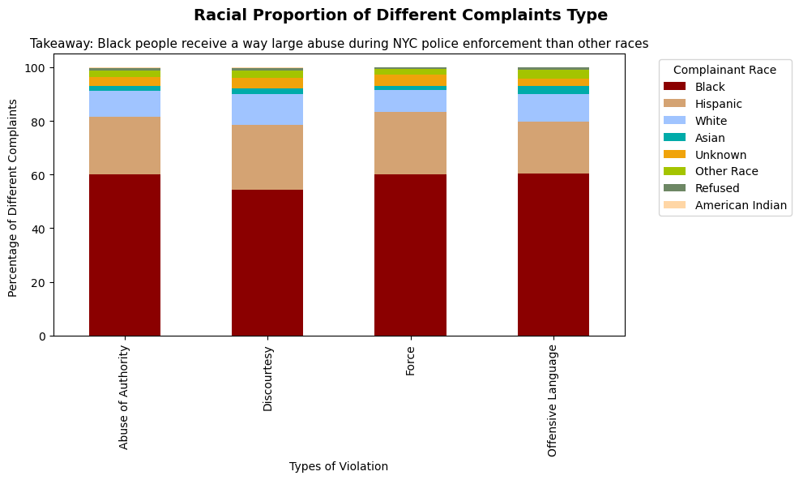
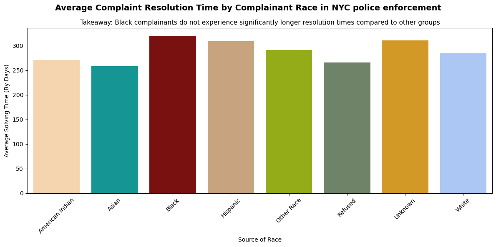

This chart shows the proportion of complaints by race across different FADO types. The data indicates that Black individuals consistently make up the largest proportion of complainants, regardless of the type of alleged misconduct.
Design Decisions and Rationale: * Score: 1.5 * RATIONALE_1: Using stacked bar chart to represent different porportion in one general scale, better than four separate pie chart because you can evaluate and compare their volume by heights. * RATIONALE_2: Carefully choose a distinct color for Black people to form strong contrast wtih other colors and to show big difference * RATIONALE_3: Making the color indication box outside the main graph to avoid overlapping

Design Decisions and Rationale: * Score: -1.5 * RATIONALE_1: Using the same color as the supporting graph to easily compare to corresponding races * RATIONALE_2: Ignore the effects of different Fado type to avoid messiness and complication and choosing the resolution time to making people believe solving time and reports of complaints are the same thing * RATIONALE_3: Using the average time to extract the effects of big base, and therefore normalize the extreme number effects 8 RATIONALE_4: Adding bold to the title and add a line underneath to add the main takeaway of the picture.

The supporting evidence is really straightforward because no matter how I adjusted the factors or measurements(including FADO type, proportion and officers'races and etc.) it remains clear that black individuals have the largest share of complainants, so this easy supporting evidence makes it difficult to find a counter-argument. So I have to find other measurements like the solving time to argue against it. Now I think the ethical analysis and visualization should be defined as finding fit measurements and representations to show the relationship and correlations especially using representative and earnest data. “Acceptable” persuasive choices should be using real data to demonstrate practical complete patterns, while the "misleading" choice incorporate using unilateral and incomplete data to distort and over generalized conclusion, including maginify marginal differences and using one-sided evidence and measurements. Therefore, it is crucial to include clarity, accuracy and transparency.